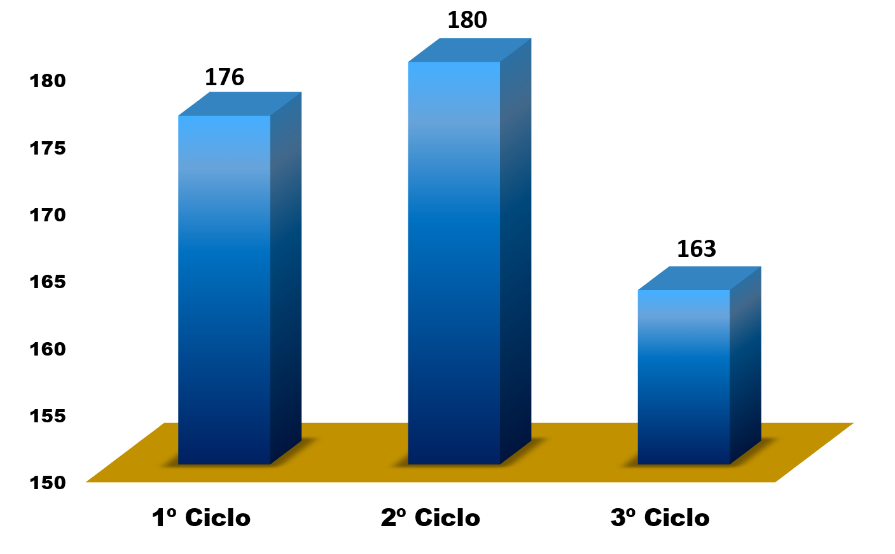
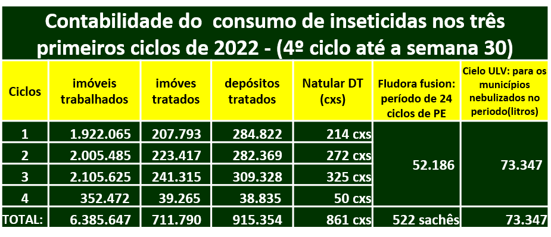

1º Liraa de 2022

Descrição:
Primeiro Liraa realizado em 2022, no período de janeiro a fevereiro, início das chuvas no Estado do Maranhão, período em que, historicamente, tem-se uma infestação entomológica mais acentuada, e isto fica evidenciado quando comparamos os quatro levantamentos anuais, onde o primeiro levantamento sempre traz picos mais altos de alto risco, em vermelho, e que, no transcorrer do ano tende a retroceder. Veremos nos próximos gráficos esta nítida conclusão.
2º Liraa de 2022

Descrição:
Já neste segundo levantamento realizado no período de abril a maio, percebemos uma redução na infestação de alto risco, em vermelho, de 12,9% no período anterior, para 9,6%,corroborando com o histórico de anos anteriores, e esta queda continuará acontecendo ao longo do ano, à proporção que o baixo risco, em verde, aumenta substancialmente, enquanto que, o médio risco, em amarelo, permanece estável, com pouquíssima elevaçao ou redução.
3º Liraa de 2022

Descrição:
Neste terceiro levantamento percebemos uma diminuição drástica no alto risco, em vermelho, de 9,6% no anterior, para 3,31%. Ao mesmo tempo que o médio risco, em amarelo, também mostra uma leve queda, e o baixo risco, em verde, sobe de ma eira exponencial, efetivando um grau de baixa infestação estadual, naquilo que os números, de forma parcial e/ou momentânea, demonstram através desses últimos levantamentos.
Média de infestação por Regionais

Descrição:
Este gráfico, em forma de pizza, mostra a infestação em média das Regionais no somatório dos tès últimos levantamentos. Os valores são analisados de cima para baixo, no sentido horário, onde no topo está a Regional de Açailândia com 2,96%, e percorrendo todo o círculo, finaliza com a, regional de Zá Doca, ao seu lado, com uma infestação de 1,41%. Verificamos que apenas quatro Regionais apresentam infestação de baixo risco, em verde: Caxias, Rosário, Santa Inês e Viana. Enquanto que, as demais, estáo todas em médio risco - amarelo. No entanto, cabe ressaltar que, para efeito de uma análise entomológica mais aprimorada, náo devemos tomar como parâmetro este demonstrativo, haja visto que, algumas Regionais que apresentam esta baixa infestaçao, não realizaram o levantamento de 100% dos seus municípios, enquanto que, outras que estão em médio risco, em sua grande maioria, realizaram o levantamento em 100%.
1º Liraa de 2022

descrição:
Distribuição dos municípios por infestação no mapa estadual. A classifucação para baixo risco, médio risco e alto risco, estão demonstradas respectivamete em suas cores padrão em verde, amarelo e vermelho.
2º Liraa de 2022

Descrição
Identificamos claramente a redução dos municípios em vermelho, com relação ao mapa anterior, ao mesmo tempo que cresce em verde os municípios em baixo risco.
3º Liraa de 2022

Descrição
Acentua-se ainda mais neste terceiro mapa, que reflete a realização do terceiro liraa, a redução dos municípios em vermelho (alto risco), cedendo espaço para os que estáo se multiplicando em verde (baixo risco), enquanto que, em número maior, observamos a escalada dos municípios em médio risco (amarelo).
PQAVS-Coberturas das visitas domiciliares
descrição:
Os municípios que aumentaram a sua cobertura de visitas domiciliares aparecem neste gráfico na coluna central, com 180, dos 217, que refere-se ao terceio ciclo. No primeiro foram 176 a alcançarem a meta, e no terceiro, 163. Lembrando que esta meta compreende realizar, pelo menos, quatro ciclos com uma cobertura mínima de 80% dos imóveis visitados daqueles que foram pactuados para o PQAVS, indicador 8.
Consumo de inseticidas
descrição:
Tabela demonstrativa do resumo de gastos dos insumos empregados ao longo do ano no controle das Arboviroses no Estado do Maranhão. Neste consumo está inserido o larvicida NATULAR DT, o FLUDORA FUSION e o CIELO ULV, ambos usados na eliminação de larvas do Aedes aegypti(Natular DT), eliminação do mosquito adulto(Cielo ulv), na ação de nebulização, e borrifação dos PE's - Pontos Estratégicos(Fludora fusion). Este consumo se refere ao primeiro semestre de 2022.